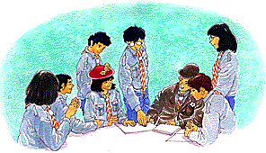

Tipo de Actividad: Juego
Duración: 3 horas
Lugar:
En el local de Unidad o en campamento
Participantes:
La Unidad

1Moreno
Capital (85 kilometros)
2 Parque Delfos (Area Hermoseada)
3 Granja de Dunton (Sr. Campos)
4 a Moreno y Ciudad Capital
5 Area de Servicios
6 a Esmeralda y la Costa
7 Sra. Durán
8 Cafe "Joe" (Sr. Gómez)
9 Nuevo Camino al Area de Servicios
10 Sr. y Sra. Barra
11 Propiedad Municipal |
12
Garage "Largo Camino" (Sr. Herrera)
13 Mansión del Sr. Solís
14 Sra. Vera
15 Sr. Soto
16 Dra. María Torres
17 Sr. Llanza
18 Escuela (Sra. Montes)
19 Estacionamientos
20 Bar "El Atajo" (Sr. Alvarez)
21 Concejal Fuentes
22 Sr. Tomás (Tienda) |
23
Semáforo
24 Edificio sin uso
25 Iglesia
26 Padre Suárez
27 Estación de Policía
28 Fernando Concha (Fábrica de bolsas de papel)
29 Viejas líneas
30 Estación de ferrocarril
32 B2173
33 a Esmeralda (35 kilómetros y a la costa) |
¿Cómo enfrentar aquellas
situaciones en las que muchas personas tienen que tomar una decisión?
Sin duda, es difícil porque cada uno defiende intereses particulares.
Hoy día, frecuentemente, se presentan casos en los cuales el progreso
para algunos significa un retroceso para otros, un perjuicio para su calidad
de vida.
Con esta actividad, queremos que tu Unidad se aproxime a este tipo de problemas
de una manera entretenida. Es un juego que tiene por objetivo que los participantes
adopten un rol dentro de una situación ficticia, obligándolos
a discutir en torno a materias que afectan la vida de toda la comunidad
y tomar decisiones al respecto.
En primer lugar, tienen que imaginar lo siguiente: Las autoridades de un
país han decidido construir una carretera que debe atravesar un hermoso
pueblo pequeño. ¿Cómo creen que se sienten sus habitantes?
Probablemente tendrán una apreciación distinta si se colocan
en el lugar de cientos de personas que necesitan esa autopista.
Antes de la actividad
Para preparar este juego, los responsables adultos deben seguir los pasos
que se entregan a continuación.
| 1. |
De acuerdo al número de participantes, tienen
que confeccionar las tarjetas "actor de un papel" y "obstaculizador"
que aparecen en el Anexo 1.
Recuerden que estas tarjetas deben llevar el dibujo del personaje y, por
el reverso, la información necesaria para caracterizarlo.
La cantidad de jugadores puede fluctuar entre 23 y 48 personas. Antes de
iniciar la actividad, sugerimos que hagan la siguiente distribución:
el 70% recibe tarjetas de "actor de un papel"; el 15%, tarjetas
de "obstaculizador"; el 15% restante no recibe tarjetas y se considera
"el grupo de opinión no comprometido". |
| 2. |
Los encargados tienen que elaborar una copia grande
del mapa de Valle Verde y el proyecto de la autopista que se muestra en
la Figura 1. Este plano debe estar a la vista de todos los scouts durante
el juego. |
| 3. |
También deben preparar una copia del informativo
"LA ESTRELLA" (Anexo 2) para cada participante. |
| 4. |
Una semana antes de la actividad, los responsables
adultos solicitan información complementaria a los jugadores. Se
trata de averiguar lo siguiente:
 El costo que tiene cada kilómetro de una
autopista. El costo que tiene cada kilómetro de una
autopista.
Efectos de la contaminación acústica
sobre plantas, animales y personas.
Mecanismos para oponerse a una obra pública.
¿Existen o no?
|
| 5. |
Además, el equipo de Unidad pide que los jóvenes
traigan disfraces y elementos de caracterización en el día
del juego. |
Motivación
La Unidad se reúne en sesión plenaria. Para que la actividad
resulte exitosa, el director del juego explica a los scouts que deben hacer
el mayor esfuerzo posible y ponerse en el lugar de su personaje.
Luego introduce el dilema señalando que, muchas veces, los resultados
del progreso económico e industrial no son compatibles con la protección
del medio ambiente y la paz. Por ejemplo, el automóvil nos permite
trasladarnos rápida y cómodamente desde un lugar a otro, pero
su motor contamina el aire con gases tóxicos.
A menudo se logra satisfacer a un gran número de personas sacrificando
el bienestar de unos pocos. Esto ocurre en el caso de la construcción
de una represa: si bien mucha gente se beneficiará de la energía
eléctrica que produzca, implica dejar muchos bosques y poblados bajo
el agua.
Realización del juego
Duración sugerida: 10 minutos
| 1. |
El director del juego le pide a todos los participantes
que se imaginen que viven en Valle Verde, un hermoso pueblo pequeño
por donde va a pasar la nueva autopista M19. Muchos habitantes se oponen
proyecto, pero varios consideran que es una oportunidad para mejorar su
situación actual.
Entre todos tienen que decidir sobre el futuro de Valle Verde. |
| 2. |
Para iniciar el juego, los encargados exhiben el mapa
y entregan a los jugadores una copia del informativo "LA ESTRELLA".
Aquí se describe la disyuntiva en que se encuentra el pueblo. Las
opiniones al respecto son variadas y se ha fijado una reunión pública
para exponer los distintos puntos de vista y analizar todas las consecuencias. |
Duración sugerida: 30 minutos
| 3. |
Los responsables adultos distribuyen las tarjetas
"actor de un papel", de modo que la mayor cantidad de scouts obtenga
un rol. Las tarjetas "obstaculizador" deben ser entregadas a los
participantes que no tienen personaje. Si se considera necesario, los encargados
pueden inventar y agregar otras tarjetas.
Los jóvenes que no reciben tarjetas, pasan a formar parte del "grupo
de opinión no comprometido". En la reunión pública,
las facciones en conflicto tratarán de ganar su apoyo. Se espera
que estos jugadores aporten nuevos datos gracias a la investigación
previa realizada durante la semana. |
| 4. |
El director del juego anuncia a todos los participantes
que disponen de tiempo para prepararse antes de la reunión pública.
Este es el momento para que estudien sus roles, creando los argumentos para
exponer en la discusión posterior. Los encargados proponen a los
scouts que observen en el mapa cuáles son los sectores residenciales,
industriales y comerciales de Valle Verde. La ubicación es decisiva
y permite encontrar poderosas razones para estar a favor o en contra de
la autopista.
También en este lapso, los jugadores tienen que buscar la mejor manera
de caracterizar a su personaje, aprovechando todos los accesorios traídos
de la casa. |
Duración sugerida: 10 minutos
| 5. |
El equipo de Unidad puede incentivar a los participantes
que tienen la misma posición para que exploren posibles reacciones
colectivas. Debe existir un tiempo para que se puedan organizar las facciones
a favor y en contra del proyecto de la autopista, así como también
los "no comprometidos".
En este momento, se anuncia la hora exacta y el lugar donde se llevará
a cabo la reunión pública de los habitantes de Valle Verde. |
Duración sugerida: 45 minutos
a 1 hora
| 6. |
La reunión pública será presidida
por el Concejal Fuentes, quien desea que prevalezcan los deseos de los habitantes
de Valle Verde por sobre todo. Por esto, necesita saber qué posición
tendrá que adoptar en el futuro ante el Consejo de la Provincia (la
autoridad regional) y el Ministerio (la autoridad nacional). El director
del juego puede asumir el papel del Concejal Fuentes si la situación
así lo exige; lo importante es asegurar que cada jugador tenga la
oportunidad de expresar sus ideas. |
| 7. |
El Concejal Fuentes da inicio a la reunión
pública. Uno tras otro, los habitantes de Valle Verde comienzan a
exponer sus argumentos.Es muy probable que el debate se vuelva acalorado
a ratos, pero es la obligación del presidente controlar la discusión.
Después que todos se han pronunciado, el Concejal Fuentes anuncia
la realización de una votación que decidirá el futuro
del proyecto de la autopista. ¡Sólo tienen derecho a voto los
residentes de Valle Verde! Luego de conocer el resultado, el presidente
declara terminada la reunión pública. |
8. Para finalizar el juego, el
equipo de Unidad le pide a cada Patrulla que haga un artículo sobre
la reunión pública para "LA ESTRELLA". También
pueden solicitar un reportaje grabado en cinta para la radioemisora local
de Valle Verde.
9. Los artículos son leídos
en la siguiente reunión de Unidad. Después de
las exposiciones, los responsables adultos
invitan a los scouts a comentar la actividad. El objetivo es que cada participante
tenga la posibilidad de expresar qué fue lo que sintió mientras
interpretaba a su personaje.
Esperamos que este juego les haya servido
para aprender a enfrentar problemas similares al ejemplo que se plantea
en "La autopista del Valle Verde". Recuerden que siempre una solución
será más justa si todos hacen el esfuerzo por ponerse en el
lugar de los demás.
Este material es una adaptación de
"Autopista de Spring Green" diseñada por Stephen Joseph
y Niel Lester, y publicada por la División de Educación Científica,
Técnica y Vocacional de la UNESCO.
Anexo 1
TARJETAS: ACTOR DE PAPEL Y OBSTACULIZADOR
Los siguientes son ejemplos de tarjetas que se pueden usar para determinar
roles en este juego de simulación. No son rígidos y es posible
crear otros personajes con intereses particulares, a favor o en contra del
proyecto de la autopista. Aunque la mayor parte del contenido se aplica
a un cierto tipo de comunidad (europeo-occidental), se puede adaptar fácilmente
a la realidad de cualquier vecindario. Si la Unidad desea realizar una adaptación
del juego, los responsables adultos deben incluir algunos personajes típicos
del pueblo, la región o el país donde viven.
1. Tarjetas "obstaculizador"
| TARJETA DE OBSTACULIZADOR "Seguramente
habrá un ruido terrible de la autopista, sobre todo al pasar por
el terraplén en la granja del Sr. Campos". |
|
TARJETA DE OBSTACULIZADOR
"¿Por qué no amplían mejor los ferrocarriles?
¿Acaso no hay tren de Ciudad Capital a Esmeralda?" |
|
TARJETA DE OBSTACULIZADOR
"Oí decir que las vacas daban menos leche cuando había
ruido. ¿No les afectará eso a las vacas del Sr. Campos?" |
|
TARJETA DE OBSTACULIZADOR
"Eso de que disminuirá el tránsito en la A74 es falso,
seguramente. ¿No habrá mucha gente de la región tratando
de salir a la autopista por Valle Verde?" |
|
2. Tarjetas "actor de un papel"
 |
Usted es la médico local de Valle
Verde y, aunque ha vivido aquí durante cinco años, alguna
gente del lugar aún no se siente segura con usted por ser la primera
médico mujer de Valle Verde. Usted está especialmente preocupada
de los aspectos sanitarios de la nueva carretera, sobre todo el daño
mental que causa en los niños pequeños el plomo contenido
en el petróleo; piensa que el tránsito adicional de la autopista
va a aumentar este problema. |
|
 |
Su casa está situada justamente
en el paso de la autopista. Usted ha vivido aquí toda su vida. Antes
de quedar viuda, compraron con su marido una granja avícola al padre
del Sr. Solís, cuando aún estaba vivo. Usted está decidida
a quedarse en su casa y hará todo lo que pueda por detener la autopista,
aún si los del Ministerio le hicieran una buena oferta por su inmueble. |
|
 |
Usted es un alto funcionario en el Departamento
de Medio Ambiente. El Ministro le pidió hacer un informe sobre el
resultado de la reunión. Usted llegó a Valle Verde en tren,
pues nunca ha manejado un automóvil. Aunque tiene un chofer, prefiere
viajar en tren. Como funcionaria civil, usted debe ser imparcial, pero personalmente
apoya la protección ambiental. |
|
 |
Usted es la gerente de los restaurantes
"Donde Lorca" y se le ha informado que obtendrá el contrato
para el Área de Servicios de Valle Verde en la M19. Su misión
es simple: convencer a los vecinos de que hallarán muchas oportunidades
de empleo. Usted también anda en busca de una persona capaz de administrar
el restaurante y la cafetería-bar. |
|
 |
Usted es la coordinadora del grupo de
presión ambientalista "Amigos del Mundo". Usted se opone
tenazmente a la autopista, como ya lo ha explicado a LA ESTRELLA. Espera
poder convencer a la gente de Valle Verde para la campaña en contra
de ella. Usted es joven e idealista, cree que la M19 representa la destrucción
ambiental contra la cual hay que luchar en todas partes. Usted ha combatido
planes locales antes, pero
este es el primer proyecto nacional. |
|
 |
Usted está furioso. La autopista
no sólo va a pasar a metros del patio de su granja, sino que la cortará
en dos. El Ministerio le ha dicho que podrá usar fácilmente
la B2173, que pasa sobre la autopista, para ir de una mitad de la granja
a la otra; por otro lado, la M19 le va a traer serios problemas para llevar
y traer el ganado desde y hacia el establo de ordeño. También
está enojado porque el Sr. Solís, a quien le arrienda el terreno,
parece indiferente. |
|
 |
Usted es el director de "Construcciones
Ugarte Limitada", un experto constructor de autopistas y miembro de
la Federación Nacional de Carreteras. Usted espera obtener el contrato
de la M19. Usted es un hombre de negocios, ansioso por obtener ganancias,
por lo tanto, duro cuando se trata de negociar. |
|
 |
Usted es el propietario del garaje "Largo
Camino". Está preocupado por la pérdida económica
que va a sufrir si se construye la nueva Área de Servicio de M19.
Usted sólo dejaría de oponerse al desarrollo de este lugar
si consigue un buen negocio de reparación de averías en la
autopista. Esto significa que, aunque sus ventas de petróleo disminuyeran,
su negocio de reparaciones podría prosperar. |
|
 |
Usted es el representante de Valle Verde
en el Consejo Provincial. Usted convocó la reunión pública
porque quiere conocer qué desea la gente del pueblo. Debe estar consciente
de que hay fuertes sentimientos en torno a la autopista y que debe ser firme,
pero equitativo. |
|
 |
Usted es el director de "Servicio
de Contenedores Real Limitada" que transporta bienes desde y hacia
Esmeralda. Usted está renovando su flota de camiones pesados y la
autopista será un verdadero impulso para el negocio. Usted cree firmemente
en el
refrán "donde hay basura, hay dinero". |
|
Anexo 2

AÑO Nº3, NÚMERO 4, NOVIEMBRE, LOS
ALERCES Nº443, VALLE VERDE ···· ANEXO 2
Planes de Autopista Sacuden a Valle
Verde
Valle Verde, un pintoresco y encantador
pueblo en la principal carretera que une Esmeralda con Ciudad Capital, está
considerando con sentimientos encontrados la publicación de los planes
de construcción de la nueva autopista M19. Algunos residentes locales
han declarado la guerra a todo este negocio, mientras que otros insisten
en que la autopista va a convertir al pueblo en un lugar seguro y tranquilo.
Esta semana fui al pueblo para averiguar las opiniones de sus residentes
y debo admitir, para |
De nuestro reportero Juan Rodríguez
mi gran alivio, que elConcejal Fuentes,
representante de Valle Verde ante el Consejo Provincial, ya había
pensado hacer lo mismo y había convocado a una reunión pública,
que se efectuará próximamente en la Municipalidad. El Concejal
Fuentes me informó que él quisiera escuchar a todas las partes
interesadas. Ya escribió al Departamento de Transporte y también
al de Medioambiente, pidiéndoles que envíen a sus representantes.
Tiene muchas esperanzas de recibir una respuesta favorable de ellos. |
RUIDO
Lo primero que me impactó en el pueblo fue el tremendo ruido proveniente
sobre todo de los pesados camiones en la parte céntrica de la localidad.
El Padre Suárez, capellán del lugar, me dijo que el ruido
y la vibración estaban causando un considerable daño estructural
a su iglesia, situada justamente al lado de la carretera principal. Sin
embargo, una residente local que también vive junto a la A74, la
Sra. "Manodura" Durán, como se le dice cariñosamente,
señaló: "He vivido aquí toda mi vida y el ruido
del tránsito nunca me ha molestado".
NO QUIERO MOVERME
La Sra. Durán siguió diciendo: "Me dijeron que mi casa
será demolida si se construye la nueva carretera, pero lo harán
sobre mi cadáver; me quedaré aquí hasta que me saquen
a la rastra".
PELIGRO PARA CRUZAR
Palabras duras, por cierto, pero parece haber toda una corriente de opinión
en el pueblo que está a favor de la autopista. La Sra. Pérez,
que vive en la propiedad |
Municipal, me habló del temor que
sentía por el hecho de que sus hijos tenían que atravesar
dos veces al día la concurrida carretera A74, de ida y vuelta a la
escuela. Dijo: "En esa carretera fueron atropellados cinco niños
el año pasado y todoel mundo conoce, por su puesto, la terrible muerte
del joven José López acaecida hace algunos años".
La Sra. Montes, directora de la escuela primaria del pueblo, compartió
estos temores, aunque señaló, casi contra su voluntad, que
la autopista permitiría a la gente viajar a Ciudad Capital en forma
mucho más económica.
VIAJES
Algunas personas de Valle Verde viajan todos los días a la pequeña
ciudad de Moreno y, uno de ellos, el Sr. Pedro Rosas, expresó enérgicas
opiniones sobre los apuros de los viajeros de Valle Verde. "La carretera
está en pésimo estado y los trenes son caros", manifestó.
OPINIÓN
La división de la opinión local sobre el problema de la autopista
se ve reflejada en las diversas organizaciones locales |
que ahora están reuniendo fuerzas para
el combate.El grupo ecologista "Amigos del Mundo" juró
combatir a muerte la autopista y para esto es apoyado por la Sociedad de
Valle Verde, que desea proteger esta hermosa área rural de lo que
considera "los estragos" de la autopista. Pero los usuarios de
la carretera y los intereses industriales están organizando el apoyo
para la carretera. El Grupo de Desarrollo Vial de la Provincia cree que
la carretera es esencial para aliviar a Valle Verde del tránsito
y para desarrollar el comercio con la ciudad de Esmeralda. En esto son apoyados
por los constructores de carreteras, que planean enviar sus representantes
a la reunión del Concejal Fuentes.
Todos estos grupos de interés, con sus batallones de datos y de cifras,
van a subir seguramente la temperatura de los ya exaltados sentimientos
locales sobre el tema, y nadie de los que entrevisté la semana pasada
deseaba estar en el lugar del Concejal Fuentes, quién tendrá
que mantener el orden en la reunión pública. |
LA ESTRELLA pidió a los representantes de dos grupos de presión
opuestos que expusieran sus puntos de vista.
Paula Prado, coordinadora de los "Amigos
del Mundo":
"La M19 es un símbolo de lo que anda mal en la política
nacional de transportes. Ella costará millones de dólares,
tomará miles de kilómetros cuadrados de buenas tierras agrícolas
y se superpondrá al ferrocarril que funciona perfectamente bien y
que, según nosotros, podría ser mejor utilizado. Con el petróleo
agotándose, tenemos que librarnos de los automóviles y cultivar
también un poco mejor nuestro alimento. Esta carretera nos lleva
en una dirección equivocada y significará menos dinero invertido
en el transporte público, del cual depende la mitad de la población
que no tiene automóvil. Los auspiciadores de la carretera creen que
ella aliviará a Valle Verde, pero la experiencia muestra que el tránsito
se expande hasta llenar el espacio que queda disponible. Propugnaremos soluciones
reales para los problemas del tránsito, planificando en tal forma
que la gente no tenga que viajar tanto".
Andrés Arias, presidente del Grupo de Desarrollo |
 Vial de la Provincia:
"Hasta el presente, todo el tránsito
desde la capital y Esmeralda, incluyendo una flota de camiones pesados,
pasa a través de Valle Verde amenazando las vidas de todos los habitantes,
destruyendo los edificios históricos con la vibración y causando
ruido y contaminación. La M19 eliminará estos problemas y,
al mismo tiempo, ayudará a la economía general, acelerando
los viajes de los camiones y, en particular, permitiendo el ágil
comercio internacional con Esmeralda, cuya congestión en la A74 ha
impedido su desarrollo pleno. Si la M19 no se construye, esta oportunidad
se perderá, la vida en Valle Verde va a empeorar y el pueblo será
estrangulado por su propia carretera principal". Vial de la Provincia:
"Hasta el presente, todo el tránsito
desde la capital y Esmeralda, incluyendo una flota de camiones pesados,
pasa a través de Valle Verde amenazando las vidas de todos los habitantes,
destruyendo los edificios históricos con la vibración y causando
ruido y contaminación. La M19 eliminará estos problemas y,
al mismo tiempo, ayudará a la economía general, acelerando
los viajes de los camiones y, en particular, permitiendo el ágil
comercio internacional con Esmeralda, cuya congestión en la A74 ha
impedido su desarrollo pleno. Si la M19 no se construye, esta oportunidad
se perderá, la vida en Valle Verde va a empeorar y el pueblo será
estrangulado por su propia carretera principal".
|

Tipo de Actividad: Juego
Duración: 1 hora y 30 minutos
Lugar:
En el Local de Unidad o en campamento
Participantes:
La Unidad
 Existen muchos problemas que sólo
se pueden solucionar con la ayuda de los demás. Sin embargo, trabajar
con otras personas no siempre es fácil porque todos tenemos diferentes
personalidades y reaccionamos de variadas maneras en cada situación.
En el 19º Jamboree Scout Mundial, miles de jóvenes de todas
partes del mundo se reunirán para Existen muchos problemas que sólo
se pueden solucionar con la ayuda de los demás. Sin embargo, trabajar
con otras personas no siempre es fácil porque todos tenemos diferentes
personalidades y reaccionamos de variadas maneras en cada situación.
En el 19º Jamboree Scout Mundial, miles de jóvenes de todas
partes del mundo se reunirán para
divertirse
y, al mismo tiempo, resolver problemas en conjunto. Ante a desafíos
como éste, es muy importante encontrar formas para comunicarse superando
las diferencias culturales e históricas.
La actividad que ahora te presentamos se desarrolla imaginariamente en las
cálidas aguas del Caribe, donde la Unidad se transformará
en una TRIPULACION DE PIRATAS que busca uno de los mayores tesoros
jamás vistos.
Con este juego pretendemos ayudar a las Patrullas a comprender, de una manera
entretenida, el valor que tiene la cooperación.
Antes de la Actividad
Para prepararla, se requieren los siguientes materiales:
Un trozo de cartón o cartulina gruesa
de 120 centímetros de largo y 60 centímetros de ancho.
Elementos para dibujar y colorear como lápices
de grafito y colores, pinceles, pinturas, entre otros.
4 sobres grandes.
32 sobres más pequeño.
Copias de los Anexos
1 y 2 de
esta ficha para todos los observadores y las Patrullas que participan.
Un rotafolio y plumones.
Una libreta de apuntes para cada observador.
Pasos
1. Para empezar, los responsables adultos deben determinar en qué
consiste el tesoro. Ya que se trata de un juego de cooperación, les
sugerimos que éste tenga valor simbólico y que realce la identidad
y compenetración de la Unidad. Luego, deben buscar un escondite.
2. En segundo lugar, los encargados confeccionan el mapa del tesoro combinando
elementos de la geografía real con otros ficticios, por ejemplo,
una isla rodeada por arrecifes, tiburones y barcos hundidos. En todo caso,
deben procurar que la ubicación del tesoro esté correctamente
señalada. El mapa del tesoro se dibuja sobre un cartón o cartulina
gruesa de 120 x 60 centímetros.
3. Cuando el mapa del tesoro está listo, se voltea y se trazan dos
líneas que dividen el reverso en cuatro rectángulos iguales
de 60 centímetros de largo por 30 centímetros de ancho como
se muestra en la Figura 1.
En cada uno de los rectángulos se copia el modelo básico.
4. El modelo básico se compone de ocho cuadrados iguales de 15 x
15 centímetros, cada uno dividido en tres piezas. Es necesario anotar
con lápiz grafito las letras que corresponden en cada pieza (a,
b, c, d, e, f, g, h, i, j, k). Si se reproduce con exactitud el modelo
básico en los cuatro rectángulos, el mapa del tesoro tendrá
96 piezas como se observa en la Figura 1.

5. El paso siguiente es tomar uno por
uno los rectángulos y realizar el procedimiento que se describe a
continuación:
Se recortan las 24 piezas. Hay que cuidar que
todas las partes con una misma letra, tengan el mismo tamaño.
Se marcan ocho sobres pequeños con las
letras A, B, C, D, E, F, G y H. Luego, se distribuyen las
piezas siguiendo las instrucciones que se encuentran más abajo.
Antes de guardar una pieza, es necesario
borrar lo que fue escrito con lápiz grafito y, en el lugar, anotar
a qué sobre corresponde.
Sobre A contiene las piezas i, h, a.
Sobre B
contiene las piezas a, a, c.
Sobre C contiene las piezas
a, j, a.
Sobre
D contiene las piezas d, d,
g. |
Sobre E contiene las piezas g, b, c.
Sobre F
contiene las piezas c, i, g.
Sobre G contiene las piezas
f, c, k.
Sobre
H contiene las piezas e, f,
d. |
|
Los ocho sobres pequeños se guardan en
el sobre grande.
Una vez que se ha realizado este procedimiento con los cuatro rectángulos,
los responsables adultos deben tener en sus manos cuatro sobres grandes
que contienen ocho sobres (A, B, C, D, E, F, G y H) cada uno.
 Motivación del juego Motivación del juego
El director del juego explica a las patrullas que han llegado a las cálidas
aguas del Caribe donde, según una antigua leyenda, aún se
encuentra escondido uno de los más grandes tesoros de la humanidad.
La Unidad se ha transformado mágicamente en la tripulación
de uno de los barcos piratas que lo buscan. Un viejo marino, a cambio de
varios barriles de ron, les ha entregado un mapa que señala el lugar
donde se puede hallar
el preciado
botín. Pero hay un problema: con el paso del tiempo, se ha partido
en muchas piezas y es necesario armarlo de nuevo. Para lograr esta meta,
la tripulación debe recurrir al trabajo en equipo, uniendo la concentración
e ingenio de todos los piratas.
Sin entrar en detalles sobre las reglas, el director explica que el juego
no busca desarrollar la fuerza o destreza física, sino la capacidad
de cooperación.
Primera parte del juego
El juego considera cuatro Patrullas. Cada una
se sienta en círculo, en un lugar suficientemente alejado como para
no ver lo que hacen las demás. Debe designar un observador.
La Unidad permanece quieta mientras los observadores
van donde los responsables adultos. Cada observador recibe dos copias del
Anexo 1 y un sobre grande
que contiene ocho sobres pequeños marcados con las letras A, B,
C, D, E, F, G y H.
A los observadores se les debe dar tiempo para leer las instrucciones y
familiarizarse por completo con ellas. También es necesario destinar
un momento para contestar algunas preguntas y resolver dudas.
El observador tiene dos funciones: velar para que se cumplan las reglas
del juego y observar el comportamiento de los participantes.
Los observadores se reintegran a sus respectivas
Patrullas. El director del juego les solicita que entreguen las instrucciones
a la Patrulla y uno de los miembros las lee. Todas las consultas deben hacerse
en esta etapa. Cuando todos tengan claro las reglas, los observadores sacan
del sobre grande un sobre pequeño para cada miembro de la Patrulla.
NOTA: Este juego está pensado para Patrullas de 9 personas, pero
se puede adaptar con facilidad. Si faltan sobres, la Patrulla decide cúales
son los participantes sin sobre y que ayudan a otro. Si hay más sobres
que jugadores, la Patrulla debe sacar las piezas que quedan y distribuirlas
entre sus miembros.
Luego de una señal, cada persona abre
su sobre y coloca las tres piezas boca abajo, sin que se vea el dibujo
del mapa.
El observador tiene que cuidar que todos los miembros de la Patrulla puedan
ver las 24 piezas y que ninguna se encuentre boca arriba, pero no debe intervenir
en el trabajo.
Duración sugerida: 30 minutos
Tal como lo indican las instrucciones
del Anexo 1, cada Patrulla
debe formar ocho cuadrados perfectos de iguales dimensiones (15 x 15 centímetros).
Apenas una Patrulla termina, debe ponerse de pie y esperar que termine el
resto de la Unidad.
Cuando todas las Patrullas tienen armado su rompecabezas,
el director debe dar la señal para darlo vuelta y apreciar el dibujo.
Una vez más es necesario esperar hasta que todas las Patrullas estén
listas para continuar. Entonces, el encargado confirma que ninguna tiene
el mapa del tesoro completo, sino una sección. Por lo tanto, es necesario
recurrir a la cooperación para lograr el objetivo final.
El director del juego invita a las Patrullas
a unir los trozos y formar, por fin, el mapa. Cuando está listo,
toda la tripulación de piratas debe salir en busca del tesoro perdido.
Hay que evitar que se produzca una carrera por ganar el botín. Se
debe enfocar la actividad de manera que el hallazgo sea un triunfo de toda
la Unidad.
Segunda parte del juego
Las Patrullas vuelven a juntarse por separado.
El director de juego entrega una copia del cuestionario (Anexo 2) a cada observador y Patrulla.
Estas preguntas son útiles para promover la discusión que
debe estar centrada en los sentimientos de los integrantes frente al comportamiento
de los demás; es importante que todos opinen.
Duración sugerida: 15 a 20 minutos
La Unidad se reúne en una sesión
plenaria. El director de juego pide algunos voluntarios para comentar lo
aprendido en la actividad. Si se cuenta con un rotafolio, puede enumerar
las impresiones. Resulta interesante solicitar a los participantes que relacionen
el juego con alguna experiencia personal de cooperación o no-cooperación.
Esperamos que este taller les haya servido para comprender la importancia
de nuestras actitudes, que pueden contribuir a solucionar u obstaculizar
la salida.
Esta actividad ha sido recogida y adaptada
del "Manual y Libro de Recursos de Capacitación para la Participación
Popular", publicado por el Departamento de Asuntos Económicos
y Sociales de las Naciones Unidas.
Anexo 1
INSTRUCCIONES PARA LA PATRULLA
Tienen en sus manos ocho sobres que contienen varios trozos de cartón
para formar cuadrados. Cuando se da la señal, deben repartir un sobre
a cada miembro de la Patrulla.
NOTA: Si faltan sobres, la Patrulla decide cúales son los participantes
sin sobre y que ayudan a otro. Si hay más sobres que jugadores, se
deben sacar las piezas que quedan y distribuirlas entre todos.
Ante una nueva señal, cada uno debe vaciar y colocar sus tres
piezas al frente boca abajo, de manera que sólo se vea la letra
que indica a qué sobre corresponde. Las 24 piezas deben estar a la
vista de todos.
Luego, cada uno debe tratar de formar un cuadrado. Es necesario seguir las
reglas que se encuentran a continuación:
| 1. |
No pueden hablar entre ustedes. |
| 2. |
No pueden tomar una pieza de otro compañero
ni tampoco pueden solicitarla bajo ninguna circunstancia. |
| 3. |
Cada uno puede dar una o más piezas a otro
compañero si lo desea. |
| 4. |
Una vez terminada la tarea, se quedan de pie esperando
que el director del juego los autorice a dar vuelta sus cuadrados. |
| 5. |
Después de la autorización, en silencio,
deben armar el mapa del tesoro con los ocho cuadrados que tienen. |
RECUERDEN que la regla de oro es: Puedes dar, pero no puedes quitar o
pedir.
Anexo 2
PREGUNTAS PARA INICIAR LA DISCUSION DE LA PATRULLA
| 1. |
Cuando alguien tiene una pieza clave, pero no percibe
la solución:
¿Cómo reaccionan los demás?
¿Qué señales dan? |
| 2. |
Cuando alguien termina un cuadrado incorrectamente
y se queda satisfecho:
¿Cómo se siente?
¿Cómo se comporta el resto? |
| 3. |
Cuando alguien no encuentra la solución tan
rápido como los demás:
¿Cómo se siente?
¿Cómo responden los otros? |
| 4. |
¿Cuáles creen que son las razones para
ayudar al prójimo? |
| 5. |
¿Por qué se ignora a alguien en el grupo? |
| 6. |
¿Se puede resolver el problema sin la participación
de los demás? |

SUBIR
[Territorios en Discusión][Mi Compromiso por la Paz] |